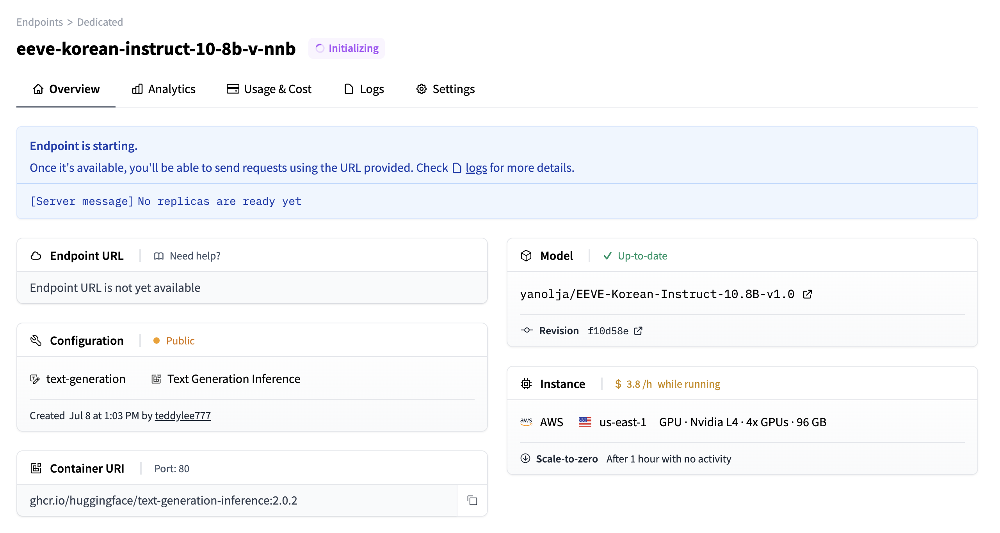

# !pip install -qU huggingface_hubHuggingface Endpoints
Huggingface Endpoints
Hugging Face Hub은 12만 개 이상의 모델, 2만 개의 데이터셋, 5만 개의 데모 앱(Spaces)을 보유한 플랫폼으로, 모두 오픈 소스이며 공개적으로 사용 가능합니다. 이 온라인 플랫폼에서 사람들은 쉽게 협업하고 함께 머신러닝을 구축할 수 있습니다.
Hugging Face Hub은 또한 다양한 ML 애플리케이션을 구축하기 위한 다양한 엔드포인트를 제공합니다. 이 예제는 다양한 유형의 엔드포인트에 연결하는 방법을 보여줍니다.
특히, 텍스트 생성 추론은 Text Generation Inference에 의해 구동됩니다. 이는 매우 빠른 텍스트 생성 추론을 위해 맞춤 제작된 Rust, Python, gRPC 서버입니다.
허깅페이스 토큰 발급
허깅페이스(https://huggingface.co) 에 회원가입을 한 뒤, 아래의 주소에서 토큰 발급을 신청합니다.
- 토큰 발급주소: https://huggingface.co/docs/hub/security-tokens
참고 모델 리스트
- 허깅페이스 LLM 리더보드: https://huggingface.co/spaces/HuggingFaceH4/open_llm_leaderboard
- 모델 리스트: https://huggingface.co/models?pipeline_tag=text-generation&sort=downloads
- LogicKor 리더보드: https://lk.instruct.kr/
Huggingface Endpoints 사용
사용하기 위해서는 Python의 huggingface_hub 패키지를 설치해야 합니다.
.env 파일에 이미 발급받은 토큰을 HUGGINGFACEHUB_API_TOKEN 을 저장한 뒤 다음 단계롤 진행합니다.
HUGGINGFACEHUB_API_TOKEN 을 불러옵니다.
from dotenv import load_dotenv
load_dotenv()# LangSmith 추적을 설정합니다. https://smith.langchain.com
# !pip install langchain-teddynote
from langchain_teddynote import logging
# 프로젝트 이름을 입력합니다.
logging.langsmith("CH04-Models")허깅페이스 토큰을 입력합니다
from huggingface_hub import login
login()간단한 프롬프트를 생성합니다.
from langchain.prompts import PromptTemplate
template = """Question: {question}
Answer:"""
template = """<|system|>
You are a helpful assistant.<|end|>
<|user|>
{question}<|end|>
<|assistant|>"""
prompt = PromptTemplate.from_template(template)Serverless Endpoints
Inference API 는 무료로 사용할 수 있으며 요금은 제한되어 있습니다. 프로덕션을 위한 추론 솔루션이 필요한 경우, Inference Endpoints 서비스를 확인하세요. Inference Endpoints 를 사용하면 모든 머신 러닝 모델을 전용 및 완전 관리형 인프라에 손쉽게 배포할 수 있습니다. 클라우드, 지역, 컴퓨팅 인스턴스, 자동 확장 범위 및 보안 수준을 선택하여 모델, 지연 시간, 처리량 및 규정 준수 요구 사항에 맞게 설정하세요.
다음은 Inference API 에 액세스하는 방법의 예시입니다.
참고
repo_id 변수에 HuggingFace 모델의 repo ID(저장소 ID) 를 할당합니다. - microsoft/Phi-3-mini-4k-instruct 모델: https://huggingface.co/microsoft/Phi-3-mini-4k-instruct
import os
from langchain_core.output_parsers import StrOutputParser
from langchain_huggingface import HuggingFaceEndpoint
# 사용할 모델의 저장소 ID를 설정합니다.
repo_id = "microsoft/Phi-3-mini-4k-instruct"
llm = HuggingFaceEndpoint(
repo_id=repo_id, # 모델 저장소 ID를 지정합니다.
max_new_tokens=256, # 생성할 최대 토큰 길이를 설정합니다.
temperature=0.1,
task="text-generation",
huggingfacehub_api_token=os.environ["HUGGINGFACEHUB_API_TOKEN"], # 허깅페이스 토큰
)
# LLMChain을 초기화하고 프롬프트와 언어 모델을 전달합니다.
chain = prompt | llm | StrOutputParser()
# 질문을 전달하여 LLMChain을 실행하고 결과를 출력합니다.
response = chain.invoke({"question": "what is the capital of South Korea?"})
print(response)print(response)전용 엔드포인트(Dedicated Endpoint)
무료 서버리스 API를 사용하면 솔루션을 빠르게 구현하고 반복할 수 있습니다. 하지만 로드가 다른 요청과 공유되기 때문에 대용량 사용 사례에서는 속도 제한이 있을 수 있습니다.
엔터프라이즈 워크로드의 경우, Inference Endpoints - Dedicated를 사용하는 것이 가장 좋습니다. 이를 통해 더 많은 유연성과 속도를 제공하는 완전 관리형 인프라에 액세스할 수 있습니다.
이러한 리소스에는 지속적인 지원과 가동 시간 보장은 물론 AutoScaling과 같은 옵션도 포함됩니다.

hf_endpoint_url변수에 Inference Endpoint의 URL을 설정합니다.
# Inference Endpoint URL을 아래에 설정합니다.
hf_endpoint_url = "https://slcalzucia3n7y3g.us-east-1.aws.endpoints.huggingface.cloud"llm = HuggingFaceEndpoint(
# 엔드포인트 URL을 설정합니다.
endpoint_url=hf_endpoint_url,
max_new_tokens=512,
temperature=0.01,
task="text-generation",
)
# 주어진 프롬프트에 대해 언어 모델을 실행합니다.
llm.invoke(input="대한민국의 수도는 어디인가요?")from langchain_core.prompts import ChatPromptTemplate
from langchain_core.output_parsers import StrOutputParser
prompt = ChatPromptTemplate.from_messages(
[
(
"system",
"A chat between a curious user and an artificial intelligence assistant. "
"The assistant gives helpful, detailed, and polite answers to the user's questions.",
),
("user", "Human: {question}\nAssistant: "),
]
)
chain = prompt | llm | StrOutputParser()chain.invoke("대한민국의 수도는?")